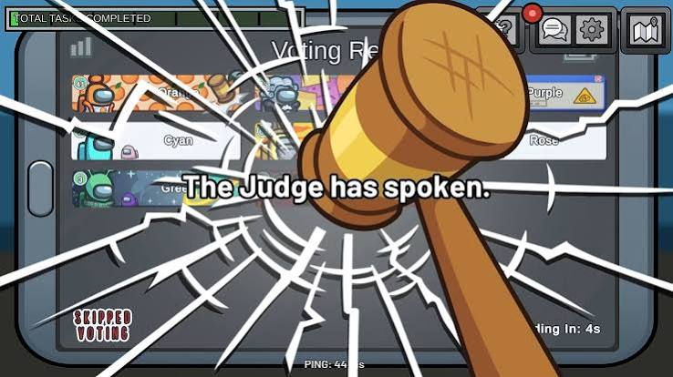

1. Historia, Contexto y Rol Operativo en la Misión
Cuando la desconfianza invade los pasillos y los impostores logran manipular la asamblea sembrando votos divididos o forzando empates reiterados, los mecanismos democráticos convencionales colapsan en la inacción. Para situaciones de emergencia institucional donde la tripulación se encuentra paralizada por la duda, la reglamentación espacial contempla la designación de un Juez: un oficial investido con la autoridad suprema de dictar un veredicto perentorio e inapelable.
El Juez no patrulla ductos de ventilación ni repara bobinas en aislamiento; su jurisdicción es la sala de debate. Dotado del poder de suspender la votación general y forzar la eyección de un sospechoso sin esperar al temporizador, el Juez asume la mayor responsabilidad de toda la nave. Si su acusación apunta a un impostor, la tripulación se encamina a la salvación; si comete el error fatal de condenar a un tripulante inocente, los protocolos de seguridad revierten el mazo y eyectan al propio Juez de manera inmediata.
Esta naturaleza de doble filo convierte las intervenciones del Juez en los momentos de mayor dramatismo psicológico de la partida. Su rol exige una capacidad sobresaliente de análisis dialéctico, cotejo de coartadas y lectura de patrones conductuales para no dejarse seducir por falacias argumentativas ni trampas de falsa inculpación.
2. Mecánicas de Juicio, Desbloqueo y Consecuencias Letales
El poder del Juez está regulado por normativas estrictas para impedir abusos arbitrarios:
2.1. Veredicto Forzado [Fase de Asamblea]
Anula los votos emitidos por el resto de jugadores y decreta la eyección sumaria del sujeto señalado, saltándose el tiempo reglamentario de la asamblea. Esta capacidad ejerce un impacto directo sobre la dinámica de supervivencia en la nave (Requisito Previo: Cuota de tareas cumplida), obligando tanto a aliados como a adversarios a recalcular constantemente sus rutas de tránsito y tiempos de reacción.
2.2. Mazo de Doble Filo [Penalización Letal]
Si el tripulante sentenciado resulta ser inocente, la esclusa revierte la orden y expulsa al Juez al espacio exterior en su lugar sin posibilidad de rescate. Esta capacidad ejerce un impacto directo sobre la dinámica de supervivencia en la nave (Margen de Error: Cero (Muerte instantánea)), obligando tanto a aliados como a adversarios a recalcular constantemente sus rutas de tránsito y tiempos de reacción.
2.3. Ruptura de Empates [Táctica de Debate]
Desbarata tácticas donde los impostores se abstienen deliberadamente para que nadie alcance la mayoría y el tiempo expire a su favor. Esta capacidad ejerce un impacto directo sobre la dinámica de supervivencia en la nave (Impacto: Resolución garantizada), obligando tanto a aliados como a adversarios a recalcular constantemente sus rutas de tránsito y tiempos de reacción.
3. Ventajas Estratégicas y Puntos Vulnerables
3.1. Ventajas Operativas y Fortalezas Estratégicas
El despliegue eficiente de este rol aporta ventajas sustanciales que permiten maximizar el control del mapa y acelerar los objetivos del equipo:
- Ventaja táctica: Capacidad de expulsar a un impostor aunque los impostores controlen el bloque de votos.
- Ventaja táctica: Neutraliza el 'Skip' forzado promovido por saboteadores.
- Ventaja táctica: Garantiza victorias inmediatas cuando se cuenta con evidencia irrefutable.
- Ventaja táctica: Otorga orden institucional y liderazgo a la masa de tripulantes.
3.2. Vulnerabilidades Críticas y Limitaciones Operativas
No obstante, el operador se encuentra sujeto a vulnerabilidades severas que los adversarios procurarán capitalizar en los momentos de mayor tensión:
- Punto vulnerable: Un único fallo de juicio condena al propio Juez y debilita al bando aliado.
- Punto vulnerable: Poder bloqueado si no se ha completado el porcentaje obligatorio de tareas.
- Punto vulnerable: Blanco número uno de asesinato si revela su identidad con anticipación.
- Punto vulnerable: Altamente susceptible al engaño de un Cambiaformas bien entrenado.
4. Estrategia Avanzada y Sociometría del Debate
4.1. El Anonimato del Magistrado
Jamás anuncies que eres el Juez al principio de la partida. Si los impostores conocen tu condición, coordinarán un sabotaje de luces o puertas en el primer minuto para liquidarte antes de que completes tus tareas y habilites el mazo.
4.2. El Escenario Crítico 50/50
El valor cumbre del Juez se aprecia en el tramo final, cuando quedan solo tres jugadores con vida (dos inocentes y un impostor). En lugar de correr el riesgo de que el impostor convenza al tercer jugador con mentiras, el Juez analiza los patrones de sabotaje y ejecuta la sentencia definitiva.
5. Perfil Operativo y Parámetros Técnicos
Desde la perspectiva de diseño lúdico y balance de juego estandarizado, este personaje se caracteriza por los siguientes parámetros oficiales normados:
- Facción: Tripulación.
- Tipo de Rol: Juicio y Poder Político.
- Momento de Uso: Solo en Asambleas.
- Requisito Tareas: 50% a 100% cuota.
- Riesgo de Fallo: Auto-Eyección Letal.
- Dificultad: Extrema.
6. Recursos Multimedia Obligatorios: Sonido y Vídeo
Golpe del Mazo / Apertura de Esclusa
Efecto sonoro solemne del veredicto judicial y la despresurización de la nave.
Vídeo Demostrativo del Juez
Simulación del juicio sumario y la eyección en plena asamblea de emergencia.
7. Archivos Gráficos y Evidencias Visuales
